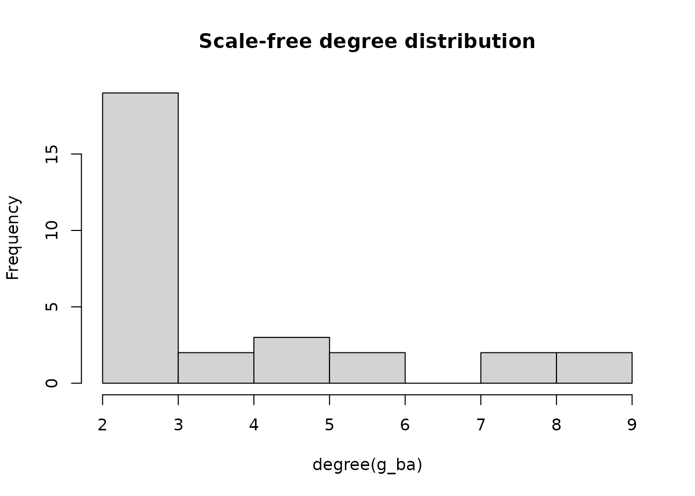

library(Saqrlab)
#>
#> Attaching package: 'Saqrlab'
#> The following object is masked from 'package:stats':
#>
#> simulateOverview
This guide covers all simulation functions in Saqrlab. The package provides multiple ways to generate synthetic data for Temporal Network Analysis:
Network Objects
| Function | Output | Use Case |
|---|---|---|
simulate_igraph() |
igraph object | Network analysis with igraph |
simulate_network() |
statnet network | SNA with sna/network packages |
simulate_tna_network() |
Fitted tna model | Ready-to-use TNA model |
Matrices & Sequences
| Function | Output | Use Case |
|---|---|---|
simulate_matrix() |
Transition matrix | Simple networks |
simulate_htna() |
Multi-type matrix | HTNA/MLNA analysis |
simulate_sequences() |
Wide-format sequences | Basic TNA |
simulate_sequences_advanced() |
Sequences with patterns | Realistic simulations |
Hierarchical & Social Data
| Function | Output | Use Case |
|---|---|---|
simulate_long_data() |
Hierarchical long format | Group/course analysis |
simulate_onehot_data() |
One-hot encoded data | ML applications |
simulate_edge_list() |
Edge list | Social networks |
Simulating Network Objects
igraph Networks with simulate_igraph()
Generate igraph objects using common graph algorithms. Perfect for network analysis, visualization, and teaching.
library(igraph)
#>
#> Attaching package: 'igraph'
#> The following objects are masked from 'package:stats':
#>
#> decompose, spectrum
#> The following object is masked from 'package:base':
#>
#> union
# Default: random Erdos-Renyi network (20-50 nodes)
g <- simulate_igraph(seed = 42)
vcount(g)
#> [1] 36
V(g)$name[1:10] # Human names from diverse regions
#> [1] "Hassan" "Bao" "Sophie" "Rebecca" "Abdi" "Somsak" "Kai"
#> [8] "Ramesh" "Jawad" "Ondrej"Graph Algorithms
# Scale-free network (Barabasi-Albert)
g_ba <- simulate_igraph(n = 30, model = "ba", m_ba = 2, seed = 42)
hist(degree(g_ba), main = "Scale-free degree distribution")
# Small-world network (Watts-Strogatz)
g_ws <- simulate_igraph(n = 30, model = "ws", nei = 3, p_rewire = 0.1, seed = 42)
# Community structure (Stochastic Block Model)
g_sbm <- simulate_igraph(n = 30, model = "sbm", blocks = 3, seed = 42)
V(g_sbm)$block # Block assignments
#> [1] 1 1 1 1 1 1 1 1 1 1 2 2 2 2 2 2 2 2 2 2 3 3 3 3 3 3 3 3 3 3Choosing Name Regions
# Names from specific regions
g_arab <- simulate_igraph(n = 15, regions = "arab", seed = 42)
V(g_arab)$name
#> [1] "Amr" "Faisal" "Salma" "Dalal" "Noor" "Heba" "Layla" "Hana"
#> [9] "Amira" "Khaled" "Dina" "Yusuf" "Rami" "Mona" "Rana"
# Names from a continent
g_africa <- simulate_igraph(n = 15, regions = "africa", seed = 42)
V(g_africa)$name
#> [1] "Kwadwo" "Palesa" "Farai" "Aminata" "Mpho" "Akua" "Zuri"
#> [8] "Solange" "Tapiwa" "Fartun" "Makeda" "Sihem" "Ngozi" "Sylvie"
#> [15] "Yassine"
# Multiple regions
g_asia <- simulate_igraph(n = 15, regions = c("east_asia", "south_asia"), seed = 42)
V(g_asia)$name
#> [1] "Ryu" "Chitra" "Imran" "Kenta" "Karthik" "Sakura"
#> [7] "Tae" "Senthil" "Maya" "Ganzorig" "Mei" "Iqbal"
#> [13] "Oyunbileg" "Tahera" "Hamza"
# Learning states instead of human names
g_states <- simulate_igraph(n = 10, name_source = "states", seed = 42)
V(g_states)$name
#> [1] "Evaluate" "Consult" "Anxious" "Regulate" "Respond"
#> [6] "Integrate" "Apply" "Note" "Doubt" "Brainstorm"Weighted Networks
# Add random edge weights
g_w <- simulate_igraph(n = 20, weighted = TRUE, seed = 42)
E(g_w)$weight[1:10]
#> [1] 0.5074584 0.5822110 0.5836390 0.1012428 0.4200994 0.6509198 0.8460479
#> [8] 0.4210498 0.4695716 0.6161283statnet Networks with simulate_network()
Generate network objects for use with sna and network packages.
library(network)
library(sna)
# Default network
net <- simulate_network(seed = 42)
network.size(net)
network.vertex.names(net)[1:10]
# Scale-free for SNA analysis
net_ba <- simulate_network(n = 30, model = "ba", seed = 42)
betweenness(net_ba)Fitted TNA Models with simulate_tna_network()
The simplest way to get a ready-to-use TNA model:
# Generate a fitted tna model
model <- simulate_tna_network(seed = 42)
class(model) # "tna"
# Use with tna functions
library(tna)
plot(model)
centralities(model)
communities(model)
# Custom configuration
model <- simulate_tna_network(
n_states = 8,
n_sequences = 500,
categories = "group_regulation",
seed = 123
)Simulating Transition Matrices
Simple Matrices with simulate_matrix()
Generate a basic transition matrix where each row sums to 1:
# Default: 9-node transition matrix
mat <- simulate_matrix(seed = 42)
dim(mat)
#> [1] 9 9
rowSums(mat) # All sum to 1
#> Regulate Plan Judge Reflect Monitor Forecast Anticipate
#> 1.0000 1.0000 0.9999 0.0000 1.0000 1.0000 1.0000
#> Check Adapt
#> 1.0000 1.0000The function automatically selects learning state names from a random category:
rownames(mat)
#> [1] "Regulate" "Plan" "Judge" "Reflect" "Monitor"
#> [6] "Forecast" "Anticipate" "Check" "Adapt"Matrix Types
# Transition matrix (default) - rows sum to 1
trans_mat <- simulate_matrix(n_nodes = 5, matrix_type = "transition", seed = 42)
rowSums(trans_mat)
#> Regulate Plan Judge Reflect Monitor
#> 1 1 1 1 1
# Frequency matrix - integer counts
freq_mat <- simulate_matrix(n_nodes = 5, matrix_type = "frequency", seed = 42)
head(freq_mat)
#> Regulate Plan Judge Reflect Monitor
#> Regulate 0 6604 0 0 0
#> Plan 0 0 4677 0 0
#> Judge 4802 0 0 0 9890
#> Reflect 8346 5191 0 0 0
#> Monitor 2156 0 9738 0 0
# Co-occurrence matrix - symmetric
cooc_mat <- simulate_matrix(n_nodes = 5, matrix_type = "co-occurrence", seed = 42)
isSymmetric(cooc_mat)
#> [1] TRUE
# Adjacency matrix - binary or weighted
adj_mat <- simulate_matrix(n_nodes = 5, matrix_type = "adjacency",
weighted = FALSE, seed = 42)
unique(as.vector(adj_mat))
#> [1] 0 1Controlling Edge Density
# Sparse network (30% edge probability, default)
sparse <- simulate_matrix(n_nodes = 6, edge_prob = 0.3, seed = 42)
sum(sparse > 0) / length(sparse)
#> [1] 0.25
# Dense network (80% edge probability)
dense <- simulate_matrix(n_nodes = 6, edge_prob = 0.8, seed = 42)
sum(dense > 0) / length(dense)
#> [1] 0.7222222Custom Node Names
# Use your own state names
mat <- simulate_matrix(
n_nodes = 4,
names = c("Explore", "Learn", "Practice", "Master"),
seed = 42
)
rownames(mat)
#> [1] "Explore" "Learn" "Practice" "Master"Multi-Type Matrices with simulate_htna()
For hierarchical (HTNA), multilevel (MLNA), or multi-type (MTNA) network analysis:
# Default: 5 types x 5 nodes = 25-node matrix
net <- simulate_htna(seed = 42)
dim(net$matrix)
#> [1] 25 25
names(net$node_types)
#> [1] "Metacognitive" "Cognitive" "Behavioral" "Social"
#> [5] "Motivational"The output includes components ready for tna package visualization:
# Node types (for plot_htna/plot_mlna)
net$node_types
#> $Metacognitive
#> [1] "Diagnose" "Regulate" "Plan" "Judge" "Reflect"
#>
#> $Cognitive
#> [1] "Understand" "Classify" "Process" "Encode" "Abstract"
#>
#> $Behavioral
#> [1] "Write" "Review" "Outline" "Revise" "Draft"
#>
#> $Social
#> [1] "Help" "Critique" "Contribute" "Present" "Seek_help"
#>
#> $Motivational
#> [1] "Overcome" "Accomplish" "Improve" "Create" "Strive"
# Nodes per type
net$n_nodes_per_type
#> Metacognitive Cognitive Behavioral Social Motivational
#> 5 5 5 5 5Custom Type Configuration
# 3 types with 4 nodes each
net <- simulate_htna(
n_nodes = 4,
n_types = 3,
type_names = c("Macro", "Meso", "Micro"),
within_prob = 0.5, # Higher within-type connectivity
between_prob = 0.1, # Lower between-type connectivity
seed = 42
)
names(net$node_types)
#> [1] "Macro" "Meso" "Micro"Using with tna Package
library(tna)
net <- simulate_htna(seed = 42)
# Plot as hierarchical network
plot_htna(net$matrix, net$node_types, layout = "polygon")
# Plot as multilevel network
plot_mlna(net$matrix, layers = net$node_types)Simulating Sequences
Basic Sequences with simulate_sequences()
Generate Markov chain sequences from a transition matrix:
# Auto-generate with learning states (default)
sequences <- simulate_sequences(
n_sequences = 100,
seq_length = 20,
n_states = 5,
seed = 42
)
head(sequences)
#> V1 V2 V3 V4 V5 V6 V7
#> 1 Appreciate Judge Discourage Discourage Regulate Discourage Regulate
#> 2 Judge Regulate Judge Plan Discourage Discourage Appreciate
#> 3 Judge Judge Regulate Judge Regulate Discourage Discourage
#> 4 Plan Discourage Regulate Discourage Judge Regulate Appreciate
#> 5 Judge Judge Plan Appreciate Regulate Discourage Judge
#> 6 Discourage Regulate Judge Discourage Judge Regulate Appreciate
#> V8 V9 V10 V11 V12 V13 V14
#> 1 Appreciate Discourage Regulate Appreciate Discourage Judge Regulate
#> 2 Discourage Regulate Judge Judge Discourage Discourage Judge
#> 3 Judge Judge Regulate Appreciate Discourage Judge Regulate
#> 4 Regulate Discourage Regulate Discourage Judge Judge Discourage
#> 5 Judge Regulate Discourage Judge Regulate Appreciate Regulate
#> 6 Discourage Judge Regulate Discourage Discourage Regulate Discourage
#> V15 V16 V17 V18 V19 V20
#> 1 Appreciate Discourage Regulate Discourage Regulate Appreciate
#> 2 Judge Discourage Judge Regulate Discourage Discourage
#> 3 Discourage Discourage Appreciate Discourage Regulate Discourage
#> 4 Discourage Discourage Appreciate Judge Regulate Discourage
#> 5 Appreciate Discourage Discourage Regulate Appreciate Discourage
#> 6 Regulate Appreciate Discourage Judge Discourage Appreciate
dim(sequences)
#> [1] 100 20Providing Your Own Parameters
# Define transition matrix
trans_mat <- matrix(c(
0.7, 0.2, 0.1,
0.2, 0.5, 0.3,
0.1, 0.3, 0.6
), nrow = 3, byrow = TRUE)
rownames(trans_mat) <- colnames(trans_mat) <- c("Plan", "Execute", "Review")
# Define initial probabilities
init_probs <- c(Plan = 0.5, Execute = 0.3, Review = 0.2)
# Generate sequences
sequences <- simulate_sequences(
trans_matrix = trans_mat,
init_probs = init_probs,
n_sequences = 100,
seq_length = 15
)
head(sequences)
#> V1 V2 V3 V4 V5 V6 V7 V8 V9
#> 1 Execute Execute Review Execute Review Review Execute Plan Plan
#> 2 Plan Plan Plan Plan Review Review Plan Plan Plan
#> 3 Plan Execute Review Execute Execute Execute Plan Plan Plan
#> 4 Plan Execute Review Review Review Review Execute Execute Execute
#> 5 Plan Plan Plan Execute Review Review Review Review Review
#> 6 Plan Plan Execute Review Execute Execute Review Review Review
#> V10 V11 V12 V13 V14 V15
#> 1 Review Plan Execute Execute Execute Plan
#> 2 Plan Plan Plan Plan Plan Execute
#> 3 Plan Plan Execute Review Plan Plan
#> 4 Execute Plan Plan Review Review Execute
#> 5 Execute Execute Execute Execute Execute Plan
#> 6 Execute Plan Plan Plan Execute PlanSelecting Learning State Categories
# Use metacognitive and cognitive verbs
sequences <- simulate_sequences(
n_sequences = 50,
seq_length = 20,
n_states = 6,
categories = c("metacognitive", "cognitive"),
seed = 42
)
# Check the states used
unique(unlist(sequences))
#> [1] "Plan" "Process" "Retrieve" "Judge" "Memorize" "Reason"Adding Missing Values
Real data often has variable sequence lengths:
# Add 0-5 trailing NAs per sequence
sequences <- simulate_sequences(
n_sequences = 50,
seq_length = 20,
n_states = 5,
na_range = c(0, 5),
include_na = TRUE,
seed = 42
)
# Check sequence lengths (excluding NAs)
apply(sequences, 1, function(x) sum(!is.na(x)))
#> [1] 16 15 15 16 15 19 17 19 18 18 20 15 15 20 17 19 16 15 19 15 16 15 18 18 18
#> [26] 19 18 19 19 16 17 18 18 17 17 16 16 19 19 18 15 17 18 20 17 18 18 15 16 15Getting Parameters Back
Sometimes you need the generating parameters for analysis:
result <- simulate_sequences(
n_sequences = 50,
seq_length = 15,
n_states = 4,
include_params = TRUE,
seed = 42
)
# Access components
head(result$sequences)
#> V1 V2 V3 V4 V5 V6 V7
#> 1 Plan Discourage Judge Plan Discourage Judge Plan
#> 2 Plan Plan Discourage Judge Plan Discourage Judge
#> 3 Plan Discourage Plan Discourage Judge Plan Judge
#> 4 Regulate Discourage Judge Plan Discourage Plan Plan
#> 5 Regulate Discourage Plan Discourage Plan Judge Discourage
#> 6 Plan Plan Plan Discourage Discourage Judge Plan
#> V8 V9 V10 V11 V12 V13 V14
#> 1 Plan Discourage Judge Plan Discourage Judge Plan
#> 2 Regulate Regulate Regulate Judge Discourage Plan Discourage
#> 3 Judge Regulate Discourage Judge Plan Discourage Plan
#> 4 Discourage Judge Plan Discourage Plan Discourage Discourage
#> 5 Judge Discourage Judge Regulate Discourage Judge Plan
#> 6 Plan Discourage Plan Discourage Plan Plan Discourage
#> V15
#> 1 Discourage
#> 2 Judge
#> 3 Plan
#> 4 Discourage
#> 5 Discourage
#> 6 Judge
result$trans_matrix
#> NULL
result$state_names
#> [1] "Plan" "Regulate" "Discourage" "Judge"Advanced Sequences with
simulate_sequences_advanced()
Generate sequences with stable transition patterns for more realistic behavior:
# Define which transitions should be stable
stable_transitions <- list(
c("Plan", "Monitor"),
c("Monitor", "Evaluate")
)
# First, create a matrix with these states
trans_mat <- matrix(c(
0.3, 0.4, 0.2, 0.1,
0.2, 0.3, 0.3, 0.2,
0.1, 0.2, 0.4, 0.3,
0.3, 0.2, 0.2, 0.3
), nrow = 4, byrow = TRUE)
rownames(trans_mat) <- colnames(trans_mat) <- c("Plan", "Monitor", "Evaluate", "Execute")
init_probs <- c(Plan = 0.4, Monitor = 0.2, Evaluate = 0.2, Execute = 0.2)
# Generate with 90% stability for defined transitions
sequences <- simulate_sequences_advanced(
trans_matrix = trans_mat,
init_probs = init_probs,
n_sequences = 100,
seq_length = 30,
stable_transitions = stable_transitions,
stability_prob = 0.90,
seed = 42
)
head(sequences)
#> V1 V2 V3 V4 V5 V6 V7 V8
#> 1 Monitor Evaluate Plan Monitor Evaluate Execute Plan Monitor
#> 2 Monitor Evaluate Evaluate Execute Execute Monitor Evaluate Execute
#> 3 Plan Monitor Evaluate Execute Monitor Evaluate Plan Monitor
#> 4 Monitor Evaluate Evaluate Monitor Evaluate Plan Monitor Evaluate
#> 5 Execute Monitor Evaluate Evaluate Evaluate Evaluate Monitor Plan
#> 6 Evaluate Monitor Evaluate Evaluate Plan Monitor Evaluate Evaluate
#> V9 V10 V11 V12 V13 V14 V15 V16
#> 1 Evaluate Monitor Evaluate Evaluate Evaluate Execute Plan Monitor
#> 2 Execute Evaluate Execute Execute Monitor Evaluate Plan Monitor
#> 3 Evaluate Evaluate Execute Monitor Evaluate Monitor Evaluate Execute
#> 4 Plan Monitor Evaluate Evaluate Plan Monitor Evaluate Evaluate
#> 5 Monitor Evaluate Monitor Plan Monitor Evaluate Execute Plan
#> 6 Evaluate Evaluate Execute Plan Evaluate Plan Monitor Evaluate
#> V17 V18 V19 V20 V21 V22 V23 V24
#> 1 Evaluate Plan Monitor Evaluate Evaluate Monitor Plan Monitor
#> 2 Evaluate Evaluate Execute Evaluate Monitor Evaluate Plan Monitor
#> 3 Execute Monitor Evaluate Execute Execute Monitor Evaluate Execute
#> 4 Monitor Evaluate Monitor Monitor Evaluate Monitor Evaluate Plan
#> 5 Monitor Evaluate Evaluate Evaluate Plan Monitor Evaluate Monitor
#> 6 Plan Monitor Evaluate Execute Execute Monitor Evaluate Plan
#> V25 V26 V27 V28 V29 V30
#> 1 Evaluate Execute Execute Monitor Evaluate Monitor
#> 2 Execute Execute Execute Plan Monitor Evaluate
#> 3 Evaluate Evaluate Monitor Evaluate Monitor Execute
#> 4 Monitor Evaluate Execute Evaluate Execute Execute
#> 5 Evaluate Evaluate Execute Execute Evaluate Evaluate
#> 6 Monitor Evaluate Monitor Evaluate Evaluate ExecuteStability Modes
# Random jump mode (default): unstable transitions go to random state
sequences <- simulate_sequences_advanced(
trans_matrix = trans_mat,
init_probs = init_probs,
n_sequences = 100,
seq_length = 30,
stable_transitions = stable_transitions,
stability_prob = 0.85,
unstable_mode = "random_jump"
)
# Perturb probability mode: adds noise to transition probabilities
sequences <- simulate_sequences_advanced(
trans_matrix = trans_mat,
init_probs = init_probs,
n_sequences = 100,
seq_length = 30,
stable_transitions = stable_transitions,
stability_prob = 0.85,
unstable_mode = "perturb_prob"
)Simulating Hierarchical Data
Long Format with simulate_long_data()
Generate data with hierarchical structure (actors in groups in courses):
# Educational data: 5 groups, 10 actors each, 3 courses
long_data <- simulate_long_data(
n_groups = 5,
n_actors = 10,
n_courses = 3,
categories = "group_regulation",
seq_length_range = c(10, 25),
seed = 42
)
head(long_data)
#> # A tibble: 6 × 6
#> Actor Achiever Group Course Time Action
#> <dbl> <chr> <int> <chr> <dttm> <chr>
#> 1 1 High 1 A 2025-01-01 10:19:56 adapt
#> 2 1 High 1 A 2025-01-01 10:29:47 consensus
#> 3 1 High 1 A 2025-01-01 10:33:44 synthesis
#> 4 1 High 1 A 2025-01-01 10:36:17 discuss
#> 5 1 High 1 A 2025-01-01 10:41:40 discuss
#> 6 1 High 1 A 2025-01-01 10:42:50 coregulate
str(long_data)
#> tibble [880 × 6] (S3: tbl_df/tbl/data.frame)
#> $ Actor : num [1:880] 1 1 1 1 1 1 1 1 1 1 ...
#> $ Achiever: chr [1:880] "High" "High" "High" "High" ...
#> $ Group : int [1:880] 1 1 1 1 1 1 1 1 1 1 ...
#> $ Course : chr [1:880] "A" "A" "A" "A" ...
#> $ Time : POSIXct[1:880], format: "2025-01-01 10:19:56" "2025-01-01 10:29:47" ...
#> $ Action : chr [1:880] "adapt" "consensus" "synthesis" "discuss" ...Variable Group Sizes
# Groups with 8-12 actors
long_data <- simulate_long_data(
n_groups = 5,
n_actors = c(8, 12), # Min and max
n_courses = 2,
seed = 42
)
# Check group sizes
table(long_data$Group, long_data$Actor)
#>
#> 1 2 3 4 5 6 7 8 9 10 11 12 13 14 15 16 17 18 19 20 21 22 23 24 25
#> 1 22 22 13 12 21 27 12 29 25 20 0 0 0 0 0 0 0 0 0 0 0 0 0 0 0
#> 2 0 0 0 0 0 0 0 0 0 0 20 19 23 28 12 24 15 10 15 16 19 0 0 0 0
#> 3 0 0 0 0 0 0 0 0 0 0 0 0 0 0 0 0 0 0 0 0 0 12 11 18 21
#> 4 0 0 0 0 0 0 0 0 0 0 0 0 0 0 0 0 0 0 0 0 0 0 0 0 0
#> 5 0 0 0 0 0 0 0 0 0 0 0 0 0 0 0 0 0 0 0 0 0 0 0 0 0
#>
#> 26 27 28 29 30 31 32 33 34 35 36 37 38 39 40 41 42 43 44 45 46 47 48
#> 1 0 0 0 0 0 0 0 0 0 0 0 0 0 0 0 0 0 0 0 0 0 0 0
#> 2 0 0 0 0 0 0 0 0 0 0 0 0 0 0 0 0 0 0 0 0 0 0 0
#> 3 29 10 28 28 0 0 0 0 0 0 0 0 0 0 0 0 0 0 0 0 0 0 0
#> 4 0 0 0 0 29 28 24 23 16 16 29 29 29 22 12 0 0 0 0 0 0 0 0
#> 5 0 0 0 0 0 0 0 0 0 0 0 0 0 0 0 23 21 21 26 29 14 22 29Achievement Levels
# Add achievement stratification
long_data <- simulate_long_data(
n_groups = 5,
n_actors = 10,
n_courses = 2,
achiever_levels = c("High", "Medium", "Low"),
achiever_probs = c(0.3, 0.5, 0.2),
seed = 42
)
table(long_data$Achiever)
#>
#> High Low Medium
#> 144 247 644One-Hot Encoded Data
Simulating with simulate_onehot_data()
For machine learning applications that require one-hot encoding:
onehot_data <- simulate_onehot_data(
n_groups = 3,
n_actors = 10,
n_states = 4,
seed = 42
)
head(onehot_data)Edge List Simulation
Social Networks with simulate_edge_list()
Generate edge lists for social network analysis:
edges <- simulate_edge_list(
n_nodes = 20,
n_edges = 50,
directed = TRUE,
seed = 42
)
head(edges)
#> source target weight class
#> 1 Anahera Shoshana 0.5500 1
#> 2 Anahera Soraya 0.4160 2
#> 3 Bataar Esther 0.6571 1
#> 4 Cuauhtemoc Oyun 0.1779 3
#> 5 Cuauhtemoc Oyunbileg 0.2346 2
#> 6 Eloise Esther 0.2227 2Network Properties
# Undirected network with custom weight range
edges <- simulate_edge_list(
n_nodes = 15,
n_edges = 30,
directed = FALSE,
weight_range = c(1, 10),
seed = 42
)
head(edges)
#> source target weight class
#> 1 Anahera Eloise 7.6587 2
#> 2 Cuauhtemoc Anahera 5.8219 1
#> 3 Cuauhtemoc Firuz 5.6356 1
#> 4 Cuauhtemoc Oyun 4.6957 1
#> 5 Cuauhtemoc Sem 7.5992 1
#> 6 Cuauhtemoc Tevita 7.4769 1Complete Network Generation
Generate TNA Datasets with simulate_tna_datasets()
Create complete datasets with sequences and their generating parameters:
datasets <- simulate_tna_datasets(
n_datasets = 5,
n_states = 6,
n_sequences = 100,
seq_length = 20,
use_learning_states = TRUE,
seed = 42
)
# Access components
datasets$dataset_1$sequences
datasets$dataset_1$trans_matrix
datasets$dataset_1$init_probsGenerate Fitted Networks with
simulate_tna_networks()
Create complete networks with fitted TNA models:
networks <- simulate_tna_networks(
n_networks = 5,
n_states = 6,
n_sequences = 150,
seq_length = 25,
model_type = "tna",
use_learning_states = TRUE,
categories = c("metacognitive", "cognitive"),
seed = 42
)
# Access model and data
networks$network_1$model
networks$network_1$sequences
networks$network_1$trans_matrixRandom Probabilities with generate_probabilities()
Generate random transition matrices and initial probabilities:
probs <- generate_probabilities(n_states = 5, seed = 42)
probs$transition_matrix
#> NULL
probs$initial_probs
#> A B C D E
#> 0.624393500 0.058089392 0.172070917 0.007716065 0.137730127Reproducibility
All simulation functions accept a seed parameter for
reproducibility:
# Same seed = same results
mat1 <- simulate_matrix(seed = 123)
mat2 <- simulate_matrix(seed = 123)
identical(mat1, mat2)
#> [1] TRUEPerformance Tips
-
Use parallel processing for batch operations with
batch_fit_models() - Set seeds for reproducible results
- Start small when testing, then scale up
-
Use
include_params = TRUEto save generating parameters for analysis
Summary
| Task | Function | Output |
|---|---|---|
| Network Objects | ||
| igraph network | simulate_igraph() |
igraph |
| statnet network | simulate_network() |
network |
| Fitted TNA model | simulate_tna_network() |
tna |
| Matrices | ||
| Simple transition matrix | simulate_matrix() |
matrix |
| HTNA/MLNA matrix | simulate_htna() |
list |
| Sequences | ||
| Basic sequences | simulate_sequences() |
data.frame |
| Sequences with patterns | simulate_sequences_advanced() |
data.frame |
| Hierarchical Data | ||
| Hierarchical long format | simulate_long_data() |
tibble |
| One-hot encoded | simulate_onehot_data() |
tibble |
| Social network edges | simulate_edge_list() |
data.frame |
| Batch Generation | ||
| Complete datasets | simulate_tna_datasets() |
list |
| Fitted networks | simulate_tna_networks() |
list |